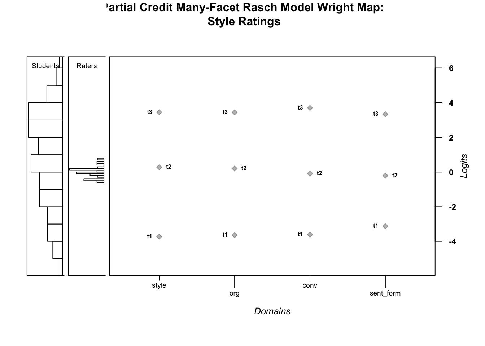
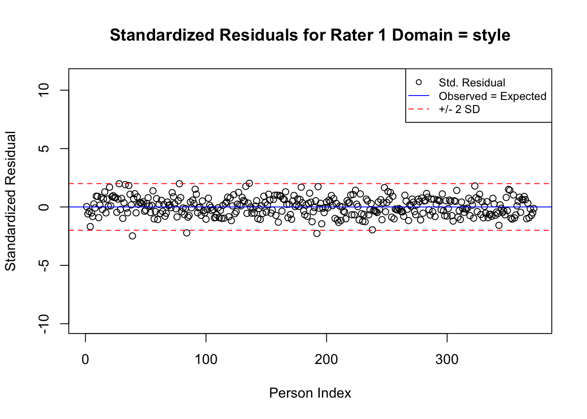
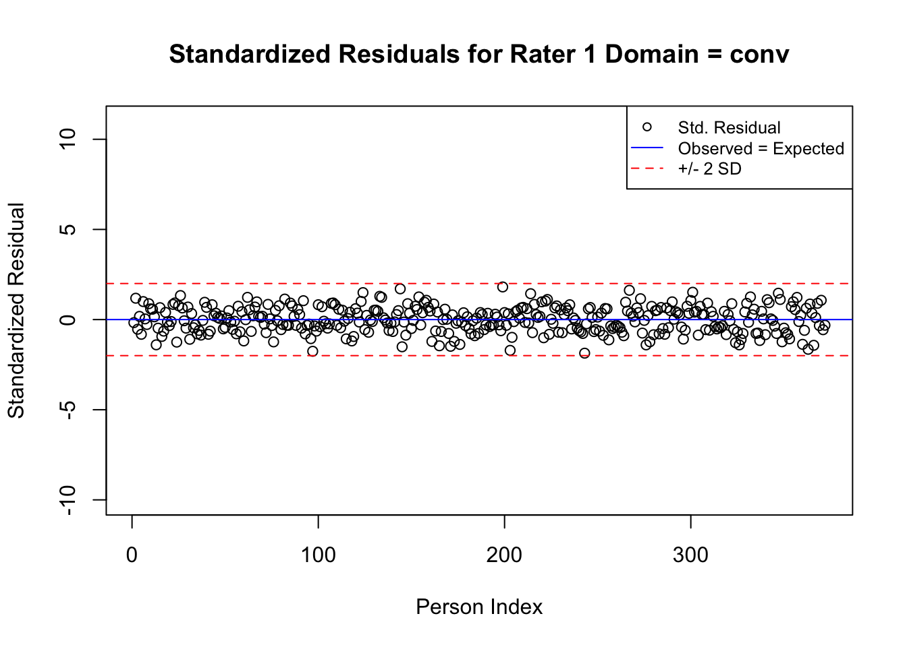
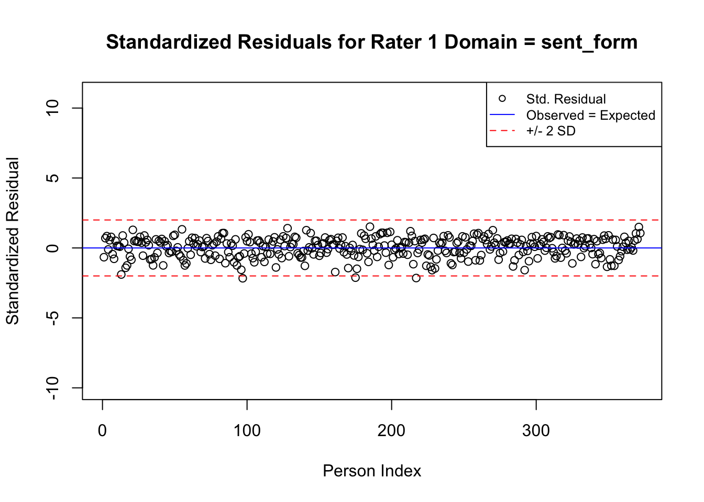
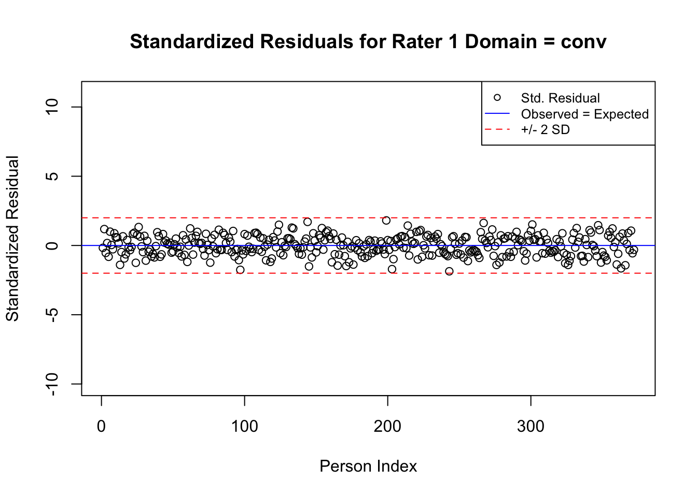
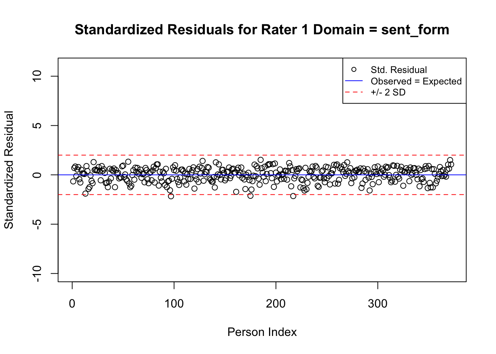

Chapter 8 Example 2: Running the Many-Facet Rasch Model for Long-Format Data using the TAM Package (Partial Credit MFRM)
In the next section, we provide a step-by-step demonstration of a MFRM analysis using the TAM package for R (-[] Cheng please add reference to Robitzsch et al., 2020) for data that are stored in long format. We encourage readers to use the example data set for this chapter that is provided in the online supplement to conduct the analysis along with us.
For this example, we use a subset of the writing assessment data that includes students’ scores related to four domains: Style, Organization, Conventions, and Sentence Formation.
Compared to the first example in this chapter, our description of the second example is relatively less detailed. In cases where there are important differences between the two examples, we describe them. In other cases, we encourage readers to refer to the first example for details.
8.1 Getting Started
Before proceeding with the analysis, readers should ensure that they have installed and loaded all three of the packages described earlier in this chapter: TAM, WrightMap, and psych.
8.2 Prepare the data for analysis
Next, we will import the data for our analysis. The data for this example are stored in the file named writing.csv. We will save these data in an object called writing.
Note that the writing data are in long format: This means that there are multiple rows for each element within the object of measurement. In the case of our example data, this means that there are multiple rows for each student. Each row includes one rater’s ratings of one student on all four of the domains in the assessment: Style, Organization, Conventions, and Sentence Formation. We can see this structure by printing the first six rows of the data frame object using the head() function.
## student language rater style org conv sent_form
## 1 3 1 1 2 2 2 2
## 2 3 1 2 2 2 2 3
## 3 3 1 3 2 2 1 2
## 4 3 1 4 2 3 2 3
## 5 3 1 5 3 3 2 3
## 6 3 1 6 3 3 2 2Next, we will explore the data using descriptive statistics using the summary() function:
## student language rater style org
## Min. : 3.0 Min. :1.000 Min. : 1 Min. :0.000 Min. :0.000
## 1st Qu.: 392.0 1st Qu.:1.000 1st Qu.: 6 1st Qu.:1.000 1st Qu.:1.000
## Median : 782.0 Median :2.000 Median :11 Median :2.000 Median :2.000
## Mean : 784.3 Mean :1.532 Mean :11 Mean :1.613 Mean :1.521
## 3rd Qu.:1171.2 3rd Qu.:2.000 3rd Qu.:16 3rd Qu.:2.000 3rd Qu.:2.000
## Max. :1574.0 Max. :2.000 Max. :21 Max. :3.000 Max. :3.000
## conv sent_form
## Min. :0.000 Min. :0.000
## 1st Qu.:1.000 1st Qu.:1.000
## Median :2.000 Median :2.000
## Mean :1.711 Mean :1.918
## 3rd Qu.:2.000 3rd Qu.:3.000
## Max. :3.000 Max. :3.000From the summary of writing, we can see there are no missing data. In addition, we can get a general sense of the scales, range, and distribution of each variable in the data set.
We can see that student identification numbers range from 3 to 1574. We can identify the number of unique students in the data using the following code:
## [1] 372There are 372 unique student identification numbers in our data. Returning to the summary of the writing data, we can see that the minimum rating on each domain was x = 0, and the maximum rating was x = 3.
8.3 Partial Credit MFRM Analysis with Long-Format Data
We will analyze the writing data using a Partial Credit MFRM (PC-MFRM), where we specify rating scale category thresholds separately for the domains in the writing assessment. The facets in this model will include raters and domains.
-[] Cheng, please add Equation 6.3 here.
In Equation 6.3, \(\theta_n\) and \(\lambda_i\) are defined as in Equation 6.1 and Equation 6.2. \(\delta_m\) is the logit-scale location for domain m. Lower domain locations indicate relatively easy domains, and higher domain locations indicate relatively difficult domains. \(\tau_mk\) is the rating scale category threshold where there is an equal probability for a rating in category k and category k-1, specific to domain m. This formulation of the PC-MFR model allows us to examine each rater’s use of the rating scale separately.
8.3.1 Specify the PC-MFRM:
With long format data, we need to ensure that the person identification numbers (in this case, student ids) are sorted from low to high before we can run the analysis.
Next, we specify the components of the PC-MFRM. In this long-format data analysis, the TAM package will treat domains as “items” because they make up the columns of the response matrix. Therefore, our facets object includes raters.
Next, we identify the object of measurement as students:
The response matrix includes students’ ratings on the four domains:
We specify the PC-MFRM from Equation 6.3 in an object for use with TAM as follows. First, we specify a name for the model object (writing_PC_MFRM), which is defined using the tilde symbol (~), followed by the facet names. As a reminder, the model must include a facet named item; in our example, the item facet is made up of domains, because the domains make up the columns in our long-format response matrix. We also include raters as a facet. Finally, we use item:step to indicate the PC model.
We run the PC-MFR model using the tam.mml.mfr() function:
# Run the PC-MFR model:
writing_PC_MFRM.model <- tam.mml.mfr(resp=writing.resp, facets=writing.facets,
formulaA=PC.writing.formula, pid=writing.pid, verbose = FALSE,
constraint = "items")Analysts who are interested in overall model-fit indices or other details that are included in the summary of the MFRM may request it using the summary() function:
## ------------------------------------------------------------
## TAM 3.5-19 (2020-05-05 22:45:39)
## R version 3.6.3 (2020-02-29) x86_64, darwin15.6.0 | nodename=Chengs-iMac | login=root
##
## Date of Analysis: 2021-05-22 22:58:25
## Time difference of 1.133822 secs
## Computation time: 1.133822
##
## Multidimensional Item Response Model in TAM
##
## IRT Model: 1PL
## Call:
## tam.mml.mfr(resp = writing.resp, pid = writing.pid, formulaA = PC.writing.formula,
## constraint = "items", facets = writing.facets, verbose = FALSE)
##
## ------------------------------------------------------------
## Number of iterations = 258
## Numeric integration with 21 integration points
##
## Deviance = 46111.6
## Log likelihood = -23055.8
## Number of persons = 372
## Number of persons used = 372
## Number of generalized items = 84
## Number of items = 4
## Number of estimated parameters = 33
## Item threshold parameters = 31
## Item slope parameters = 0
## Regression parameters = 1
## Variance/covariance parameters = 1
##
## AIC = 46178 | penalty=66 | AIC=-2*LL + 2*p
## AIC3 = 46211 | penalty=99 | AIC3=-2*LL + 3*p
## BIC = 46307 | penalty=195.32 | BIC=-2*LL + log(n)*p
## aBIC = 46202 | penalty=90.27 | aBIC=-2*LL + log((n-2)/24)*p (adjusted BIC)
## CAIC = 46340 | penalty=228.32 | CAIC=-2*LL + [log(n)+1]*p (consistent AIC)
## AICc = 46184 | penalty=72.64 | AICc=-2*LL + 2*p + 2*p*(p+1)/(n-p-1) (bias corrected AIC)
## GHP = 0.73889 | GHP=( -LL + p ) / (#Persons * #Items) (Gilula-Haberman log penalty)
##
## ------------------------------------------------------------
## EAP Reliability
## [1] 0.994
## ------------------------------------------------------------
## Covariances and Variances
## [,1]
## [1,] 8.198
## ------------------------------------------------------------
## Correlations and Standard Deviations (in the diagonal)
## [,1]
## [1,] 2.863
## ------------------------------------------------------------
## Regression Coefficients
## [,1]
## [1,] 0.70622
## ------------------------------------------------------------
## Item Parameters -A*Xsi
## item N M xsi.item AXsi_.Cat1 AXsi_.Cat2 AXsi_.Cat3
## 1 conv-rater_1_ 372 1.753 -0.280 -3.891 -4.261 -0.841
## 2 conv-rater_10 372 1.871 -0.563 -4.174 -4.825 -1.688
## 3 conv-rater_11 372 1.653 -0.164 -3.775 -4.028 -0.492
## 4 conv-rater_12 372 1.734 -0.257 -3.867 -4.213 -0.770
## 5 conv-rater_13 372 1.489 0.076 -3.535 -3.549 0.227
## 6 conv-rater_14 372 1.828 0.086 -3.525 -3.528 0.258
## 7 conv-rater_15 372 1.664 -0.638 -4.249 -4.976 -1.914
## 8 conv-rater_16 372 1.645 0.317 -3.294 -3.066 0.951
## 9 conv-rater_17 372 1.863 0.034 -3.577 -3.633 0.101
## 10 conv-rater_18 372 1.554 0.414 -3.197 -2.872 1.242
## 11 conv-rater_19 372 1.798 -0.024 -3.635 -3.749 -0.073
## 12 conv-rater_2_ 372 1.680 -0.109 -3.719 -3.917 -0.326
## 13 conv-rater_20 372 1.621 0.068 -3.543 -3.565 0.203
## 14 conv-rater_21 372 1.780 -0.132 -3.743 -3.965 -0.397
## 15 conv-rater_3_ 372 1.774 -0.090 -3.701 -3.880 -0.271
## 16 conv-rater_4_ 372 1.685 0.015 -3.596 -3.670 0.045
## 17 conv-rater_5_ 372 1.642 -0.363 -3.974 -4.425 -1.088
## 18 conv-rater_6_ 372 1.941 -0.541 -4.152 -4.783 -1.624
## 19 conv-rater_7_ 372 1.737 -0.568 -4.179 -4.836 -1.704
## 20 conv-rater_8_ 372 1.632 0.186 -3.425 -3.328 0.558
## 21 conv-rater_9_ 372 1.589 0.677 -2.933 -2.345 2.032
## 22 item4-rater_1_ 372 1.968 -1.001 -4.125 -5.335 -3.002
## 23 item4-rater_10 372 2.051 -1.283 -4.407 -5.899 -3.848
## 24 item4-rater_11 372 1.941 -0.884 -4.008 -5.102 -2.652
## 25 item4-rater_12 372 1.914 -0.977 -4.101 -5.287 -2.930
## 26 item4-rater_13 372 1.769 -0.644 -3.769 -4.623 -1.933
## 27 item4-rater_14 372 1.815 -0.634 -3.758 -4.602 -1.902
## 28 item4-rater_15 372 2.056 -1.358 -4.482 -6.050 -4.074
## 29 item4-rater_16 372 1.742 -0.403 -3.527 -4.140 -1.209
## 30 item4-rater_17 372 1.831 -0.687 -3.811 -4.707 -2.060
## 31 item4-rater_18 372 1.718 -0.306 -3.430 -3.946 -0.918
## 32 item4-rater_19 372 2.027 -0.744 -3.869 -4.823 -2.233
## 33 item4-rater_2_ 372 1.903 -0.829 -3.953 -4.991 -2.486
## 34 item4-rater_20 372 2.043 -0.652 -3.777 -4.639 -1.957
## 35 item4-rater_21 372 2.132 -0.852 -3.977 -5.039 -2.557
## 36 item4-rater_3_ 372 1.895 -0.810 -3.935 -4.954 -2.431
## 37 item4-rater_4_ 372 1.892 -0.705 -3.829 -4.744 -2.115
## 38 item4-rater_5_ 372 1.895 -1.083 -4.207 -5.499 -3.248
## 39 item4-rater_6_ 372 1.984 -1.261 -4.386 -5.857 -3.784
## 40 item4-rater_7_ 372 2.022 -1.288 -4.412 -5.910 -3.864
## 41 item4-rater_8_ 372 1.949 -0.534 -3.659 -4.402 -1.603
## 42 item4-rater_9_ 372 1.737 -0.043 -3.167 -3.419 -0.128
## 43 org-rater_1_ 372 1.559 0.442 -3.201 -2.555 1.327
## 44 org-rater_10 372 1.503 0.160 -3.483 -3.120 0.480
## 45 org-rater_11 372 1.583 0.559 -3.084 -2.322 1.676
## 46 org-rater_12 372 1.608 0.466 -3.177 -2.507 1.398
## 47 org-rater_13 372 1.645 0.798 -2.845 -1.843 2.395
## 48 org-rater_14 372 1.392 0.809 -2.834 -1.822 2.426
## 49 org-rater_15 372 1.790 0.085 -3.558 -3.270 0.254
## 50 org-rater_16 372 1.454 1.040 -2.603 -1.360 3.119
## 51 org-rater_17 372 1.441 0.756 -2.887 -1.927 2.269
## 52 org-rater_18 372 1.392 1.137 -2.506 -1.166 3.410
## 53 org-rater_19 372 1.419 0.698 -2.944 -2.043 2.095
## 54 org-rater_2_ 372 1.513 0.614 -3.029 -2.212 1.842
## 55 org-rater_20 372 1.433 0.790 -2.852 -1.859 2.371
## 56 org-rater_21 372 1.406 0.590 -3.053 -2.259 1.771
## 57 org-rater_3_ 372 1.524 0.632 -3.010 -2.175 1.897
## 58 org-rater_4_ 372 1.476 0.738 -2.905 -1.964 2.213
## 59 org-rater_5_ 372 1.707 0.360 -3.283 -2.720 1.080
## 60 org-rater_6_ 372 1.605 0.181 -3.461 -3.077 0.544
## 61 org-rater_7_ 372 1.825 0.155 -3.488 -3.130 0.464
## 62 org-rater_8_ 372 1.355 0.909 -2.734 -1.622 2.726
## 63 org-rater_9_ 372 1.309 1.400 -2.243 -0.639 4.200
## 64 style-rater_1_ 372 1.680 0.071 -3.655 -3.308 0.212
## 65 style-rater_10 372 1.820 -0.212 -3.937 -3.873 -0.635
## 66 style-rater_11 372 1.664 0.187 -3.538 -3.075 0.561
## 67 style-rater_12 372 1.680 0.094 -3.631 -3.260 0.283
## 68 style-rater_13 372 1.694 0.427 -3.299 -2.596 1.280
## 69 style-rater_14 372 1.551 0.437 -3.288 -2.575 1.312
## 70 style-rater_15 372 1.809 -0.287 -4.012 -4.023 -0.861
## 71 style-rater_16 372 1.508 0.668 -3.057 -2.113 2.004
## 72 style-rater_17 372 1.505 0.385 -3.341 -2.680 1.154
## 73 style-rater_18 372 1.586 0.765 -2.960 -1.919 2.295
## 74 style-rater_19 372 1.454 0.327 -3.399 -2.796 0.980
## 75 style-rater_2_ 372 1.688 0.242 -3.483 -2.964 0.727
## 76 style-rater_20 372 1.508 0.419 -3.306 -2.612 1.256
## 77 style-rater_21 372 1.492 0.219 -3.507 -3.012 0.656
## 78 style-rater_3_ 372 1.573 0.261 -3.464 -2.927 0.783
## 79 style-rater_4_ 372 1.605 0.366 -3.359 -2.717 1.099
## 80 style-rater_5_ 372 1.798 -0.012 -3.737 -3.472 -0.035
## 81 style-rater_6_ 372 1.694 -0.190 -3.915 -3.830 -0.571
## 82 style-rater_7_ 372 1.667 -0.217 -3.942 -3.883 -0.651
## 83 style-rater_8_ 372 1.548 0.537 -3.188 -2.375 1.611
## 84 style-rater_9_ 372 1.347 1.029 -2.697 -1.392 3.086
## B.Cat1.Dim1 B.Cat2.Dim1 B.Cat3.Dim1
## 1 1 2 3
## 2 1 2 3
## 3 1 2 3
## 4 1 2 3
## 5 1 2 3
## 6 1 2 3
## 7 1 2 3
## 8 1 2 3
## 9 1 2 3
## 10 1 2 3
## 11 1 2 3
## 12 1 2 3
## 13 1 2 3
## 14 1 2 3
## 15 1 2 3
## 16 1 2 3
## 17 1 2 3
## 18 1 2 3
## 19 1 2 3
## 20 1 2 3
## 21 1 2 3
## 22 1 2 3
## 23 1 2 3
## 24 1 2 3
## 25 1 2 3
## 26 1 2 3
## 27 1 2 3
## 28 1 2 3
## 29 1 2 3
## 30 1 2 3
## 31 1 2 3
## 32 1 2 3
## 33 1 2 3
## 34 1 2 3
## 35 1 2 3
## 36 1 2 3
## 37 1 2 3
## 38 1 2 3
## 39 1 2 3
## 40 1 2 3
## 41 1 2 3
## 42 1 2 3
## 43 1 2 3
## 44 1 2 3
## 45 1 2 3
## 46 1 2 3
## 47 1 2 3
## 48 1 2 3
## 49 1 2 3
## 50 1 2 3
## 51 1 2 3
## 52 1 2 3
## 53 1 2 3
## 54 1 2 3
## 55 1 2 3
## 56 1 2 3
## 57 1 2 3
## 58 1 2 3
## 59 1 2 3
## 60 1 2 3
## 61 1 2 3
## 62 1 2 3
## 63 1 2 3
## 64 1 2 3
## 65 1 2 3
## 66 1 2 3
## 67 1 2 3
## 68 1 2 3
## 69 1 2 3
## 70 1 2 3
## 71 1 2 3
## 72 1 2 3
## 73 1 2 3
## 74 1 2 3
## 75 1 2 3
## 76 1 2 3
## 77 1 2 3
## 78 1 2 3
## 79 1 2 3
## 80 1 2 3
## 81 1 2 3
## 82 1 2 3
## 83 1 2 3
## 84 1 2 3
##
## Item Facet Parameters Xsi
## parameter facet xsi se.xsi
## 1 style item 0.263 0.016
## 2 org item 0.634 0.016
## 3 conv item -0.088 0.016
## 4 sent_form item -0.809 0.028
## 5 rater_1_ rater -0.192 0.036
## 6 rater_10 rater -0.474 0.036
## 7 rater_11 rater -0.076 0.036
## 8 rater_12 rater -0.168 0.036
## 9 rater_13 rater 0.164 0.036
## 10 rater_14 rater 0.175 0.036
## 11 rater_15 rater -0.549 0.036
## 12 rater_16 rater 0.406 0.036
## 13 rater_17 rater 0.122 0.036
## 14 rater_18 rater 0.503 0.036
## 15 rater_19 rater 0.064 0.036
## 16 rater_2_ rater -0.020 0.036
## 17 rater_20 rater 0.156 0.036
## 18 rater_21 rater -0.044 0.036
## 19 rater_3_ rater -0.002 0.036
## 20 rater_4_ rater 0.104 0.036
## 21 rater_5_ rater -0.274 0.036
## 22 rater_6_ rater -0.453 0.036
## 23 rater_7_ rater -0.480 0.036
## 24 rater_8_ rater 0.274 0.036
## 25 rater_9_ rater 0.764 0.162
## 26 style:step1 item:step -3.725 0.031
## 27 org:step1 item:step -3.643 0.031
## 28 conv:step1 item:step -3.611 0.031
## 29 sent_form:step1 item:step -3.124 0.030
## 30 style:step2 item:step 0.276 0.028
## 31 org:step2 item:step 0.203 0.028
## 32 conv:step2 item:step -0.089 0.027
## 33 sent_form:step2 item:step -0.210 0.027
## 34 style:step3 item:step 3.449 0.041
## 35 org:step3 item:step 3.440 0.042
## 36 conv:step3 item:step 3.700 0.041
## 37 sent_form:step3 item:step 3.334 0.040
##
## Item Parameters Xsi
## xsi se.xsi
## style 0.263 0.016
## org 0.634 0.016
## conv -0.088 0.016
## rater_1_ -0.192 0.036
## rater_10 -0.474 0.036
## rater_11 -0.076 0.036
## rater_12 -0.168 0.036
## rater_13 0.164 0.036
## rater_14 0.175 0.036
## rater_15 -0.549 0.036
## rater_16 0.406 0.036
## rater_17 0.122 0.036
## rater_18 0.503 0.036
## rater_19 0.064 0.036
## rater_2_ -0.020 0.036
## rater_20 0.156 0.036
## rater_21 -0.044 0.036
## rater_3_ -0.002 0.036
## rater_4_ 0.104 0.036
## rater_5_ -0.274 0.036
## rater_6_ -0.453 0.036
## rater_7_ -0.480 0.036
## rater_8_ 0.274 0.036
## style:step1 -3.725 0.031
## org:step1 -3.643 0.031
## conv:step1 -3.611 0.031
## item4:step1 -3.124 0.030
## style:step2 0.276 0.028
## org:step2 0.203 0.028
## conv:step2 -0.089 0.027
## item4:step2 -0.210 0.027Because we used a PC formulation of the MFRM, the thresholds were estimated separately for each rater. We save the facet estimates for domains and raters as we did in the first example. However, for the threshold estimates, we extract the values labeled “item:step”.
# Save the facet estimates:
facet.estimates <- writing_PC_MFRM.model$xsi.facets # all facets together
# Extract results for each facet separately:
domain.estimates <- subset(facet.estimates, facet.estimates$facet == "item")
rater.estimates <- subset(facet.estimates, facet.estimates$facet == "rater")
# Extract domain-specific threshold estimates:
threshold.estimates <- subset(facet.estimates, facet.estimates$facet == "item:step")8.3.2 Domain facet results
Next, we will examine the results for the domain facet. Because there are only four domains, we can print the estimates to the console to view them. We can also calculate summary statsitics for the domain facet estimates using the summary() function.
## parameter facet xsi se.xsi
## 1 style item 0.26265320 0.01585224
## 2 org item 0.63426014 0.01584412
## 3 conv item -0.08840333 0.01599162
## 4 sent_form item -0.80851000 0.02753292## parameter facet xsi se.xsi
## Length:4 Length:4 Min. :-0.80851 Min. :0.01584
## Class :character Class :character 1st Qu.:-0.26843 1st Qu.:0.01585
## Mode :character Mode :character Median : 0.08712 Median :0.01592
## Mean : 0.00000 Mean :0.01881
## 3rd Qu.: 0.35555 3rd Qu.:0.01888
## Max. : 0.63426 Max. :0.02753From the summary of domain locations, we can see that the domain difficulty estimates range from \(\delta\) = -0.61 logits for the easiest domain to \(\delta\) = 0.67 for the most difficult domain.
8.3.3 Rater subgroup facet results
Nest, we will examine the rater estimates using the summary() function.
## parameter facet xsi se.xsi
## Length:21 Length:21 Min. :-0.549431 Min. :0.03623
## Class :character Class :character 1st Qu.:-0.191938 1st Qu.:0.03625
## Mode :character Mode :character Median :-0.001687 Median :0.03628
## Mean : 0.000000 Mean :0.04231
## 3rd Qu.: 0.164105 3rd Qu.:0.03635
## Max. : 0.764278 Max. :0.16236The rater location estimates from this model range from \(\lambda\) = -0.55 logits for the most lenient rater to \(\lambda\) = 0.76 logits for the most severe rater.
8.3.4 Threshold estimates
Because we used a PC formulation of the MFRM, we have separate estimates of the rating scale category thresholds for each domain. In the following code, we organize the threshold values in a matrix with separate rows for each domain. Then, we print the first six rows of the threshold matrix to the console to preview it.
n.domains <- nrow(domain.estimates)
n.thresholds <- max(writing.resp)
domain_taus <- matrix(data = NA, nrow = n.domains, ncol = n.thresholds)
for(domain.number in 1:n.domains){
domain.threshold.labels <- NULL
for(step.number in 1:n.thresholds){
domain.threshold.labels[step.number] <- paste(domain.estimates$parameter[domain.number], ":step", step.number, sep = "")
}
domain.thresholds <- subset(threshold.estimates,
threshold.estimates$parameter %in% domain.threshold.labels)
domain.thresholds.t <- t(domain.thresholds$xsi)
domain_taus[domain.number,] <- domain.thresholds.t[1,]
}
domain_taus <- cbind.data.frame(c(1:n.domains), domain_taus)
names(domain_taus) <- c("domain", "t1", "t2", "t3")
domain_taus## domain t1 t2 t3
## 1 1 -3.725268 0.27603490 3.449234
## 2 2 -3.642835 0.20323183 3.439604
## 3 3 -3.610870 -0.08923873 3.700108
## 4 4 -3.124334 -0.20954280 3.3338778.3.5 Student estimates
Next, we will estimate student locations and store the results in an object called student.ach. We will then store the student identification numbers, location estimates, and standard errors in a new object called student.locations_PCMFR.
student.ach <- tam.wle(writing_PC_MFRM.model, progress = FALSE)
student.locations_PCMFR <- cbind.data.frame(student.ach$pid, student.ach$theta, student.ach$error)
names(student.locations_PCMFR) <- c("id", "theta", "se")Next, we will examine the student location estimates using the summary() function.
## Min. 1st Qu. Median Mean 3rd Qu. Max.
## -7.1285 -1.4231 0.9448 0.7117 2.9680 7.6930From the summary of the adjusted student achievement locations, we can see that student achievement ranges from \(\theta\) = -7.13 logits for the student with the lowest achievement estimate to \(\theta\) = 7.69 logits for the student with the highest achievement estimate. On average, the students were located higher (M(\(\theta\)) = 0.71 logits) than the average domain location (M(\(\delta\))= 0.00).
8.3.6 Plot a Wright Map
Next, we will plot a Wright Map to display the locations of the parameter estimates for our PC-MFR model. The wrightMap() function requires us to store the domain location estimates as a matrix that shows domain-specific threshold locations. We already did this when we created the domain_taus object earlier.
We can plot the Wright map using the wrightMap() function. We specify several graphical parameters to modify the appearance of the plot.
wrightMap(thetas =cbind(student.locations_PCMFR$theta,
rater.estimates$xsi),
axis.persons = "",
dim.names = c("Students", "Raters"),
thresholds = domain_taus[,-1],
show.thr.lab = TRUE,
label.items.rows= 2,
label.items = domain.estimates$parameter,
axis.items = "Domains",
main.title = "Partial Credit Many-Facet Rasch Model Wright Map:\n Style Ratings",
cex.main = .6)## Warning in cbind(student.locations_PCMFR$theta, rater.estimates$xsi): number of
## rows of result is not a multiple of vector length (arg 2)
## t1 t2 t3
## [1,] -3.725268 0.27603490 3.449234
## [2,] -3.642835 0.20323183 3.439604
## [3,] -3.610870 -0.08923873 3.700108
## [4,] -3.124334 -0.20954280 3.333877In this Wright Map display, the results from the PC-MFRM analysis of the writing assessment ratings are summarized graphically using the same format as the first example in this chapter. The major differences between the models are that domains are included as a facet instead of student subgroups, and each domain has a unique set of threshold estimates.
8.4 Evaluate model-data fit
Next, we will evaluate model-data fit using the same procedures as described earlier in this chapter.
8.4.1 Evaluate unidimensionality
First, we will construct a residual matrix.
resids <- IRT.residuals(writing_PC_MFRM.model)
# Extract the raw residuals from the residuals object:
resid.matrix <- as.data.frame(resids$residuals)Next, we will calculate standardized residuals and save them in a matrix.
Next, we will calculate the variance in observations due to Rasch-model-estimated locations:
# Variance of the observations: VO
observations.vector <- as.vector(as.matrix(writing.resp))
VO <- var(observations.vector)
# Variance of the residuals: VR
residuals.vector <- as.vector(as.matrix(resid.matrix))
VR <- var(residuals.vector)
# Raw variance explained by Rasch measures: (VO - VR)/VO
(VO - VR)/VO## [1] 0.7143584## [1] 71.43584Our analysis indicates that approximately 71.61% of the variance in ratings can be explained by the PC-MFRM estimates of student, domain, and rater locations on the logit scale that represents the latent variable.
8.4.2 Principal Components Analysis of Standardized Residual Correlations
Next, we will evaluate the MFRM requirement for unidimensionality using a principal components analysis (PCA) of standardized residual correlations.
pca <- pca(as.matrix(std.resid.matrix), rotate = "none")
contrasts <- c(pca$values[1], pca$values[2], pca$values[3], pca$values[4], pca$values[5])
plot(contrasts, ylab = "Eigenvalues for Contrasts", xlab = "Contrast Number", main = "Contrasts from PCA of Standardized Residual Correlations \n(PC-MFRM)", cex.main = .8) In this example, there are three contrasts that have an eigenvalue larger than Linacre’s (2016) critical value of 2.00. This result suggests potential multi-dimensionality. We will explore the results further using residual-based fit statistics.
In this example, there are three contrasts that have an eigenvalue larger than Linacre’s (2016) critical value of 2.00. This result suggests potential multi-dimensionality. We will explore the results further using residual-based fit statistics.
8.4.3 Summaries of Residuals: Infit & Outfit Statistics
Next, we will evaluate model-data fit for individual elements of our facets (students, subgroups, and raters) using numeric summaries of the residuals associated with each element, as we have done in previous chapters.
Student fit
First, we will examine student fit using numeric infit and outfit statistics. We can request these statistics for each student using the tam.personfit() function. We will store the student fit results in an object called student.fit, and then request a summary of the results.
## outfitPerson outfitPerson_t infitPerson infitPerson_t
## Min. :0.2405 Min. :-3.7371 Min. :0.4884 Min. :-3.9688
## 1st Qu.:0.8048 1st Qu.:-1.2204 1st Qu.:0.8268 1st Qu.:-1.1888
## Median :0.9465 Median :-0.2436 Median :0.9620 Median :-0.1597
## Mean :0.9618 Mean :-0.2482 Mean :0.9714 Mean :-0.2213
## 3rd Qu.:1.0954 3rd Qu.: 0.7089 3rd Qu.:1.0871 3rd Qu.: 0.6185
## Max. :1.9949 Max. : 5.3917 Max. :1.9824 Max. : 5.4138On average, the MSE outfit and infit statistics are slightly lower than the expected value of 1 (Mean Outfit = 0.96, Mean Infit = 0.97). The average values of the standardized fit statistics are also slightly lower than their expected value of 0 (Mean Std. Outfit = -0.25, Mean Std. Infit = -0.22). For both the standardized and unstandardized fit statistics, there is notable variability across the student sample. This result suggests that model-data fit varies for individual students.
Domain and rater fit
We can also examine model-data fit related to the domain and rater facets. In the TAM package, fit analysis for facets besides the object of measurement uses combinations of elements within facets. In our example, fit statistics are calculated for rater*subgroup combinations.
rater.domain.fit <- msq.itemfit(writing_PC_MFRM.model)
rater.domain.fit <- rater.domain.fit$itemfit
summary(rater.domain.fit)## item fitgroup Outfit Outfit_t
## conv-rater_1_: 1 Min. : 1.00 Min. :0.5309 Min. :-7.3816
## conv-rater_10: 1 1st Qu.:21.75 1st Qu.:0.8521 1st Qu.:-1.9994
## conv-rater_11: 1 Median :42.50 Median :0.9584 Median :-0.5210
## conv-rater_12: 1 Mean :42.50 Mean :0.9773 Mean :-0.4319
## conv-rater_13: 1 3rd Qu.:63.25 3rd Qu.:1.1410 3rd Qu.: 1.5425
## conv-rater_14: 1 Max. :84.00 Max. :1.5076 Max. : 5.7335
## (Other) :78
## Outfit_p Infit Infit_t Infit_p
## Min. :0.000000 Min. :0.5627 Min. :-7.4049 Min. :0.000000
## 1st Qu.:0.003517 1st Qu.:0.8657 1st Qu.:-1.9621 1st Qu.:0.002148
## Median :0.092685 Median :0.9784 Median :-0.2818 Median :0.103798
## Mean :0.231879 Mean :0.9813 Mean :-0.4201 Mean :0.234087
## 3rd Qu.:0.456375 3rd Qu.:1.1088 3rd Qu.: 1.5044 3rd Qu.:0.417554
## Max. :0.990028 Max. :1.5218 Max. : 6.3830 Max. :0.981096
## As needed, researchers can also examine model-data fit statistics specific to levels of explanatory facets, such as domains in the current example. This can be accomplished by calculating summaries of fit statistics within domains. The code below calculates averages of rater fit within each domain. For a more detailed view of rater fit within domains, we create an object with domain-specific rater fit statistics in the subsequent code block.
ngroups <- nrow(domain.estimates)
domain.fit <- matrix(data = NA, nrow = ncol(domain.estimates), ncol = 4 )
for(domain.number in 1:ncol(domain.estimates)){
d <- domain.estimates$parameter[domain.number]
rater.domain.labels <- NULL
for(r in 1:nrow(rater.estimates)){
rater_label <- rater.estimates$parameter[r]
rater.domain.labels[r] <- paste(d, "-", rater_label, sep = "")
}
rater.domain.fit.subset <- subset(rater.domain.fit, rater.domain.fit$item %in% rater.domain.labels)
# add the fit statistics to the matrix:
domain.fit[domain.number, ] <- c(mean(rater.domain.fit.subset$Infit),
mean(rater.domain.fit.subset$Outfit),
mean(rater.domain.fit.subset$Infit_t),
mean(rater.domain.fit.subset$Outfit_t))
}
# add domain labels to the domain.fit object:
domain.fit <- cbind.data.frame(domain.estimates$parameter,
domain.fit)
# Convert the domain fit results to a data frame object and add meaningful column names:
domain.fit_results <- as.data.frame(domain.fit)
names(domain.fit_results) <- c("domain", "Mean_Infit_MSE", "Mean_Outfit_MSE",
"Mean_Std_Infit", "Mean_Std_Outfit")Now that we have created a data frame with the domain-specific (average) fit statistics, we can summarize the results.
## domain Mean_Infit_MSE Mean_Outfit_MSE Mean_Std_Infit
## conv :1 Min. :0.9424 Min. :0.9390 Min. :-1.0223
## org :1 1st Qu.:0.9581 1st Qu.:0.9488 1st Qu.:-0.7369
## sent_form:1 Median :0.9706 Median :0.9567 Median :-0.5483
## style :1 Mean :0.9813 Mean :0.9773 Mean :-0.4201
## 3rd Qu.:0.9938 3rd Qu.:0.9852 3rd Qu.:-0.2315
## Max. :1.0415 Max. :1.0566 Max. : 0.4386
## Mean_Std_Outfit
## Min. :-1.0032
## 1st Qu.:-0.7373
## Median :-0.6383
## Mean :-0.4319
## 3rd Qu.:-0.3329
## Max. : 0.5522Finally, it may be useful to examine fit statistics as they apply to individual raters. This can be accomplished by extracting rater-specific fit statistics within each domain. The code below calculates rater fit statistics within each subgroup.
n.domains <- nrow(domain.estimates)
n.raters <- nrow(rater.estimates)
rater.fit <- matrix(data = NA, nrow = n.raters, ncol = (n.domains * 4) + 1 )
for(rater.number in 1:nrow(rater.estimates)){
if(rater.number < 10) r <- paste("rater_", rater.number, "_", sep = "")
if(rater.number >= 10) r <- paste("rater_", rater.number, sep = "")
rater.domain.labels <- NULL
for(d in 1:nrow(domain.estimates)){
domain_label <- domain.estimates$parameter[d]
rater.domain.labels[d] <- paste(domain_label, "-", r, sep = "")
}
rater.domain.fit.subset <- subset(rater.domain.fit, rater.domain.fit$item %in% rater.domain.labels)
# calculate rater-specific fit statistics:
rater.outfit <- rater.domain.fit.subset$Outfit
rater.infit <- rater.domain.fit.subset$Outfit
rater.std.outfit <- rater.domain.fit.subset$Outfit_t
rater.std.infit <- rater.domain.fit.subset$Infit_t
# add the fit statistics to the matrix:
rater.fit[rater.number, ] <- c(rater.number, rater.outfit, rater.infit,
rater.std.outfit, rater.std.infit)
}
# Convert the rater fit results to a dataframe object and add meaningful column names:
rater.fit_results <- as.data.frame(rater.fit)
infit_mse_labels <- NULL
for(domain in 1:n.domains){
d <- domain.estimates$parameter[domain]
infit_mse_labels[domain] <- paste("Infit_MSE_", d, sep = "")
}
outfit_mse_labels <- NULL
for(domain in 1:n.domains){
d <- domain.estimates$parameter[domain]
outfit_mse_labels[domain] <- paste("outfit_MSE_", d, sep = "")
}
std_infit_mse_labels <- NULL
for(domain in 1:n.domains){
d <- domain.estimates$parameter[domain]
std_infit_mse_labels[domain] <- paste("std_infit_MSE_", d, sep = "")
}
std_outfit_mse_labels <- NULL
for(domain in 1:n.domains){
d <- domain.estimates$parameter[domain]
std_outfit_mse_labels[domain] <- paste("std_outfit_MSE_", d, sep = "")
}
names(rater.fit_results) <- c("Rater", outfit_mse_labels, infit_mse_labels,
std_outfit_mse_labels, std_infit_mse_labels)Now that we have created a data frame with the rater-specific fit statistics, we can summarize the results.
## Rater outfit_MSE_style outfit_MSE_org outfit_MSE_conv
## Min. : 1 Min. :0.6203 Min. :0.5349 Min. :0.5314
## 1st Qu.: 6 1st Qu.:0.9423 1st Qu.:0.8183 1st Qu.:0.7423
## Median :11 Median :0.9803 Median :0.9543 Median :0.9431
## Mean :11 Mean :1.0566 Mean :0.9614 Mean :0.9390
## 3rd Qu.:16 3rd Qu.:1.1949 3rd Qu.:1.1284 3rd Qu.:1.1079
## Max. :21 Max. :1.5076 Max. :1.2498 Max. :1.2430
## outfit_MSE_sent_form Infit_MSE_style Infit_MSE_org Infit_MSE_conv
## Min. :0.5309 Min. :0.6203 Min. :0.5349 Min. :0.5314
## 1st Qu.:0.8777 1st Qu.:0.9423 1st Qu.:0.8183 1st Qu.:0.7423
## Median :0.9336 Median :0.9803 Median :0.9543 Median :0.9431
## Mean :0.9520 Mean :1.0566 Mean :0.9614 Mean :0.9390
## 3rd Qu.:1.0824 3rd Qu.:1.1949 3rd Qu.:1.1284 3rd Qu.:1.1079
## Max. :1.2808 Max. :1.5076 Max. :1.2498 Max. :1.2430
## Infit_MSE_sent_form std_outfit_MSE_style std_outfit_MSE_org
## Min. :0.5309 Min. :-5.6828 Min. :-7.2549
## 1st Qu.:0.8777 1st Qu.:-0.6897 1st Qu.:-2.3590
## Median :0.9336 Median :-0.2269 Median :-0.5642
## Mean :0.9520 Mean : 0.5522 Mean :-0.6280
## 3rd Qu.:1.0824 3rd Qu.: 2.4048 3rd Qu.: 1.4881
## Max. :1.2808 Max. : 5.7335 Max. : 2.9812
## std_outfit_MSE_conv std_outfit_MSE_sent_form std_infit_MSE_style
## Min. :-7.3816 Min. :-5.8979 Min. :-5.73380
## 1st Qu.:-3.6658 1st Qu.:-1.3706 1st Qu.:-0.99401
## Median :-0.7047 Median :-0.6790 Median :-0.06115
## Mean :-1.0032 Mean :-0.6487 Mean : 0.43862
## 3rd Qu.: 1.3936 3rd Qu.: 0.9099 3rd Qu.: 2.47375
## Max. : 2.9876 Max. : 2.9067 Max. : 6.38299
## std_infit_MSE_org std_infit_MSE_conv std_infit_MSE_sent_form
## Min. :-7.2672 Min. :-7.4049 Min. :-6.5507
## 1st Qu.:-2.2358 1st Qu.:-4.1189 1st Qu.:-1.4860
## Median :-0.1441 Median :-0.6799 Median :-0.7798
## Mean :-0.4549 Mean :-1.0223 Mean :-0.6418
## 3rd Qu.: 1.2517 3rd Qu.: 1.4964 3rd Qu.: 0.8452
## Max. : 3.8177 Max. : 3.8886 Max. : 4.0513Graphical displays of residuals
Next we will construct plots of standardized residuals associated with individual raters within each domain.
# Before constructing the plots, find the maximum and minimum values of the standardized residuals to set limits for the axes:
max.resid <- ceiling(max(std.resid.matrix))
min.resid <- ceiling(min(std.resid.matrix))
# The code below will produce plots of standardized residuals for selected raters as listed in raters.to.plot:
raters.to.plot <- c(1:2)
for(rater.number in raters.to.plot){
if(rater.number < 10) r <- paste("rater_", rater.number, "_", sep = "")
if(rater.number >= 10) r <- paste("rater_", rater.number, sep = "")
rater.domain.labels <- NULL
for(d in 1:nrow(domain.estimates)){
domain_label <- domain.estimates$parameter[d]
rater.domain.labels[d] <- paste(domain_label, "-", r, sep = "")
}
std.resid.subset <- subset(resids$stand_residuals, select = rater.domain.labels)
for(domain.number in 1:n.domains){
domain.name <- domain.estimates$parameter[domain.number]
plot(std.resid.subset[, domain.number], ylim = c(min.resid, max.resid),
main = paste("Standardized Residuals for Rater ", rater.number, " Domain = ", domain.name, sep = ""),
ylab = "Standardized Residual", xlab = "Person Index")
abline(h = 0, col = "blue")
abline(h=2, lty = 2, col = "red")
abline(h=-2, lty = 2, col = "red")
legend("topright", c("Std. Residual", "Observed = Expected", "+/- 2 SD"), pch = c(1, NA, NA),
lty = c(NA, 1, 2),
col = c("black", "blue", "red"), cex = .8)
}
} 



A separate plot is produced for each rater*domain combination.
Expected and observed response functions
Finally, we will construct plots of expected and observed response functions. By default, the TAM package combines the item facet (in this case, domains), with levels of the other facets (in this case, raters) when constructing expected and observed response function plots.
For brevity, we only plot the expected and observed response functions for three selected rater*domain combinations. Readers can adjust the “items=” specification to construct plots for elements of interest for their analyses.
## Iteration in WLE/MLE estimation 1 | Maximal change 2.2459
## Iteration in WLE/MLE estimation 2 | Maximal change 0.8781
## Iteration in WLE/MLE estimation 3 | Maximal change 0.5385
## Iteration in WLE/MLE estimation 4 | Maximal change 0.1794
## Iteration in WLE/MLE estimation 5 | Maximal change 0.0144
## Iteration in WLE/MLE estimation 6 | Maximal change 1e-04
## Iteration in WLE/MLE estimation 7 | Maximal change 0
## ----
## WLE Reliability= 0.993


## ....................................................
## Plots exported in png format into folder:
## /Users/chenghua/Documents/GitHub/The Rasch Book/Plots8.5 Summarize the results in tables
As a final step, we will create tables that summarize the calibrations of the students, domains, raters, and rating scale category thresholds.
Table 1 is an overall model summary table that provides an overview of the logit scale locations, standard errors and fit statistics for all of the facets in the analysis. This table provides a quick overview of the location estimates and numeric model-data fit statistics for the facets in a MFRM.
Because of the estimation procedure for the MFRM in TAM, fit statistics are combined for the item facet (in this case, domains) and other facets. As a result, the fit statistics in this table will be the same for the rater facet and the domain facets.
8.5.1 Model summary table
PC_MFRM_summary.table.statistics <- c("Logit Scale Location Mean",
"Logit Scale Location SD",
"Standard Error Mean",
"Standard Error SD",
"Outfit MSE Mean",
"Outfit MSE SD",
"Infit MSE Mean",
"Infit MSE SD",
"Std. Outfit Mean",
"Std. Outfit SD",
"Std. Infit Mean",
"Std. Infit SD")
PC_MFRM_student.summary.results <- rbind(mean(student.locations_PCMFR$theta),
sd(student.locations_PCMFR$theta),
mean(student.locations_PCMFR$se),
sd(student.locations_PCMFR$se),
mean(student.fit$outfitPerson),
sd(student.fit$outfitPerson),
mean(student.fit$infitPerson),
sd(student.fit$infitPerson),
mean(student.fit$outfitPerson_t),
sd(student.fit$outfitPerson_t),
mean(student.fit$infitPerson_t),
sd(student.fit$infitPerson_t))
PC_MFRM_domain.summary.results <- rbind(mean(domain.estimates$xsi),
sd(domain.estimates$xsi),
mean(domain.estimates$se.xsi),
sd(domain.estimates$se.xsi),
mean(rater.domain.fit$Outfit),
sd(rater.domain.fit$Outfit),
mean(rater.domain.fit$Infit),
sd(rater.domain.fit$Infit),
mean(rater.domain.fit$Outfit_t),
sd(rater.domain.fit$Outfit_t),
mean(rater.domain.fit$Infit_t),
sd(rater.domain.fit$Infit_t))
PC_MFRM_rater.summary.results <- rbind(mean(rater.estimates$xsi),
sd(rater.estimates$xsi),
mean(rater.estimates$se.xsi),
sd(rater.estimates$se.xsi),
mean(rater.domain.fit$Outfit),
sd(rater.domain.fit$Outfit),
mean(rater.domain.fit$Infit),
sd(rater.domain.fit$Infit),
mean(rater.domain.fit$Outfit_t),
sd(rater.domain.fit$Outfit_t),
mean(rater.domain.fit$Infit_t),
sd(rater.domain.fit$Infit_t))
# Round the values for presentation in a table:
PC_MFRM_student.summary.results_rounded <- round(PC_MFRM_student.summary.results, digits = 2)
PC_MFRM_domain.summary.results_rounded <- round(PC_MFRM_domain.summary.results, digits = 2)
PC_MFRM_rater.summary.results_rounded <- round(PC_MFRM_rater.summary.results, digits = 2)
PC_MFRM_Table1 <- cbind.data.frame(PC_MFRM_summary.table.statistics,
PC_MFRM_student.summary.results_rounded,
PC_MFRM_domain.summary.results_rounded,
PC_MFRM_rater.summary.results_rounded)
# add descriptive column labels:
names(PC_MFRM_Table1) <- c("Statistic", "Students", "Domains", "Raters")
# Print the table to the console
PC_MFRM_Table1## Statistic Students Domains Raters
## 1 Logit Scale Location Mean 0.71 0.00 0.00
## 2 Logit Scale Location SD 2.92 0.61 0.34
## 3 Standard Error Mean 0.23 0.02 0.04
## 4 Standard Error SD 0.07 0.01 0.03
## 5 Outfit MSE Mean 0.96 0.98 0.98
## 6 Outfit MSE SD 0.23 0.20 0.20
## 7 Infit MSE Mean 0.97 0.98 0.98
## 8 Infit MSE SD 0.22 0.19 0.19
## 9 Std. Outfit Mean -0.25 -0.43 -0.43
## 10 Std. Outfit SD 1.47 2.66 2.66
## 11 Std. Infit Mean -0.22 -0.42 -0.42
## 12 Std. Infit SD 1.48 2.80 2.808.5.2 Rater calibration table
Table 2 is a table that summarizes the overall calibrations of individual raters. For data sets with manageable sample sizes such as the writing assessment example in this chapter, we recommend reporting details about each level of explanatory facets (e.g., individual raters) in a table similar to this one.
# Calculate the average rating for each rater:
n.raters <- nrow(rater.estimates)
Avg_Rating_rater.domains <- NULL
for(rater.number in 1:n.raters){
rater.subset <- subset(writing, writing$rater == rater.number)
rater.ratings <- as.vector(c(rater.subset$style,
rater.subset$org, rater.subset$conv,
rater.subset$sent_form))
Avg_Rating_rater.domains[rater.number] <- mean(rater.ratings)
}
# Combine rater calibration results in a table:
PC_MFRM_Table2 <- cbind.data.frame(c(1:nrow(rater.estimates)),
Avg_Rating_rater.domains,
rater.estimates$xsi,
rater.estimates$se.xsi,
rater.fit_results[, -1])
names(PC_MFRM_Table2) <- c("Rater ID", "Average Rating", "Rater Location", "Rater SE",
names(rater.fit_results[, -1]))
# Sort Table 2 by rater severity:
PC_MFRM_Table2 <- PC_MFRM_Table2[order(-PC_MFRM_Table2$`Rater Location`),]
# Round the numeric values (all columns except the first one) to 2 digits:
PC_MFRM_Table2[, -1] <- round(PC_MFRM_Table2[,-1], digits = 2)
# Print the first six rows of the table to the console
head(PC_MFRM_Table2)## Rater ID Average Rating Rater Location Rater SE outfit_MSE_style
## 21 21 1.70 0.76 0.16 1.51
## 10 10 1.81 0.50 0.04 1.19
## 8 8 1.62 0.41 0.04 0.95
## 20 20 1.65 0.27 0.04 1.06
## 6 6 1.81 0.17 0.04 1.17
## 5 5 1.76 0.16 0.04 1.23
## outfit_MSE_org outfit_MSE_conv outfit_MSE_sent_form Infit_MSE_style
## 21 1.25 1.03 1.14 1.51
## 10 1.23 0.94 0.88 1.19
## 8 0.82 0.92 1.00 0.95
## 20 0.97 1.08 0.90 1.06
## 6 0.91 0.89 0.92 1.17
## 5 1.05 1.23 1.19 1.23
## Infit_MSE_org Infit_MSE_conv Infit_MSE_sent_form std_outfit_MSE_style
## 21 1.25 1.03 1.14 5.73
## 10 1.23 0.94 0.88 2.33
## 8 0.82 0.92 1.00 -0.62
## 20 0.97 1.08 0.90 0.79
## 6 0.91 0.89 0.92 2.06
## 5 1.05 1.23 1.19 2.84
## std_outfit_MSE_org std_outfit_MSE_conv std_outfit_MSE_sent_form
## 21 2.98 0.46 1.53
## 10 2.78 -0.70 -1.17
## 8 -2.36 -1.03 0.02
## 20 -0.34 1.10 -1.18
## 6 -1.24 -1.39 -0.70
## 5 0.63 2.81 1.85
## std_infit_MSE_style std_infit_MSE_org std_infit_MSE_conv
## 21 6.38 3.82 0.67
## 10 2.47 3.06 -0.68
## 8 -0.56 -2.54 -0.68
## 20 0.21 0.09 1.50
## 6 2.29 -0.83 -1.49
## 5 2.94 1.25 3.05
## std_infit_MSE_sent_form
## 21 2.53
## 10 -1.62
## 8 0.85
## 20 -0.78
## 6 -0.82
## 5 2.638.5.3 Domain calibration table
Table 3 summarizes the calibration of individual domains. For data sets with manageable sample sizes such as the writing assessment example in this chapter, we recommend reporting details about each element of explanatory facets (e.g., individual domains) in a table similar to this one.
# Calculate the average rating for each domain:
Avg_Rating_domains <- colMeans(writing.resp)
# Combine domain calibration results in a table:
PC_MFRM_Table3 <- cbind.data.frame(domain.estimates$parameter,
Avg_Rating_domains,
domain.estimates$xsi,
domain.estimates$se.xsi,
domain_taus[, -1],
domain.fit_results[, -1])
names(PC_MFRM_Table3) <- c("Domain", "Average Rating", "Domain Location", "Domain SE",
"Threshold 1", "Threshold 2", "Threshold 3",
names(domain.fit_results[, -1]))
# Sort Table 3 by domain difficulty:
PC_MFRM_Table3 <- PC_MFRM_Table3[order(-PC_MFRM_Table3$`Domain Location`),]
# Round the numeric values (all columns except the first one) to 2 digits:
PC_MFRM_Table3[, -1] <- round(PC_MFRM_Table3[,-1], digits = 2)
# Print the table to the console
PC_MFRM_Table3## Domain Average Rating Domain Location Domain SE Threshold 1
## org org 1.52 0.63 0.02 -3.64
## style style 1.61 0.26 0.02 -3.73
## conv conv 1.71 -0.09 0.02 -3.61
## sent_form sent_form 1.92 -0.81 0.03 -3.12
## Threshold 2 Threshold 3 Mean_Infit_MSE Mean_Outfit_MSE Mean_Std_Infit
## org 0.20 3.44 0.98 0.96 -0.45
## style 0.28 3.45 1.04 1.06 0.44
## conv -0.09 3.70 0.94 0.94 -1.02
## sent_form -0.21 3.33 0.96 0.95 -0.64
## Mean_Std_Outfit
## org -0.63
## style 0.55
## conv -1.00
## sent_form -0.658.5.4 Student calibration table
Finally, Table 4 provides a summary of the student calibrations. When there is a relatively large person sample size, it may be more useful to present the results as they relate to individual persons or subsets of the person sample as they are relevant to the purpose of the analysis.
# Calculate average ratings for students:
Person_Avg_Rating <- apply(writing.resp, 1, mean)
# Combine person calibration results in a table:
PC_MFRM_Table4 <- cbind.data.frame(rownames(student.locations_PCMFR),
Person_Avg_Rating,
student.locations_PCMFR$theta,
student.locations_PCMFR$se,
student.fit$outfitPerson,
student.fit$outfitPerson_t,
student.fit$infitPerson,
student.fit$infitPerson_t)
names(PC_MFRM_Table4) <- c("Student ID", "Average Rating", "Student Location","Student SE","Outfit MSE","Std. Outfit", "Infit MSE","Std. Infit")
# Round the numeric values (all columns except the first one) to 2 digits:
PC_MFRM_Table4[, -1] <- round(PC_MFRM_Table4[,-1], digits = 2)
# Print the first six rows of the table to the console
head(PC_MFRM_Table4)## Student ID Average Rating Student Location Student SE Outfit MSE Std. Outfit
## 1 1 2.00 1.88 0.21 0.97 -0.16
## 2 2 2.25 3.04 0.21 1.25 1.83
## 3 3 1.75 2.66 0.21 0.59 -3.26
## 4 4 2.50 -2.48 0.21 1.37 2.27
## 5 5 2.75 -0.53 0.21 0.79 -1.39
## 6 6 2.50 -4.05 0.22 0.80 -1.79
## Infit MSE Std. Infit
## 1 0.97 -0.13
## 2 1.29 2.04
## 3 0.59 -3.25
## 4 1.34 2.11
## 5 0.79 -1.43
## 6 0.82 -1.67